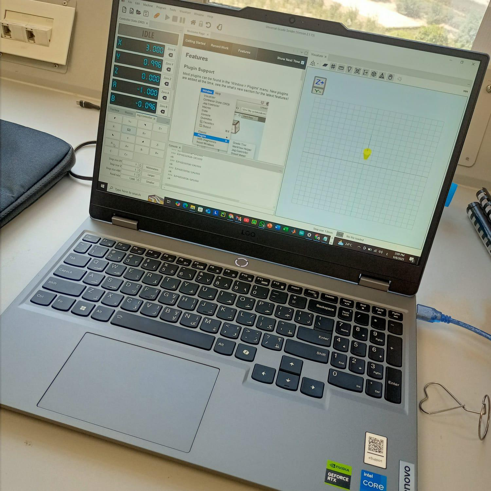
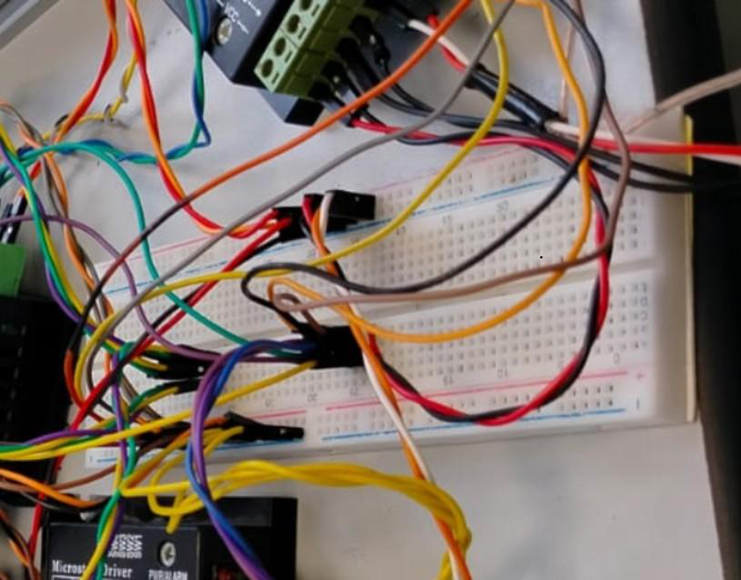
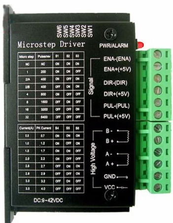
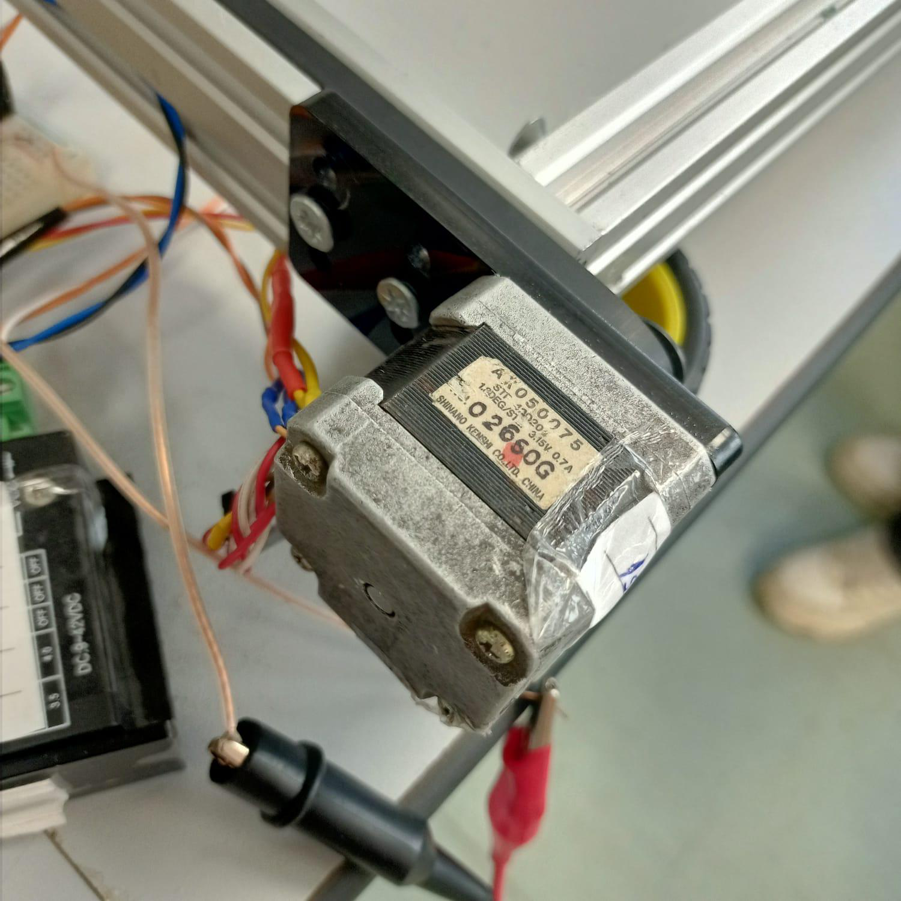
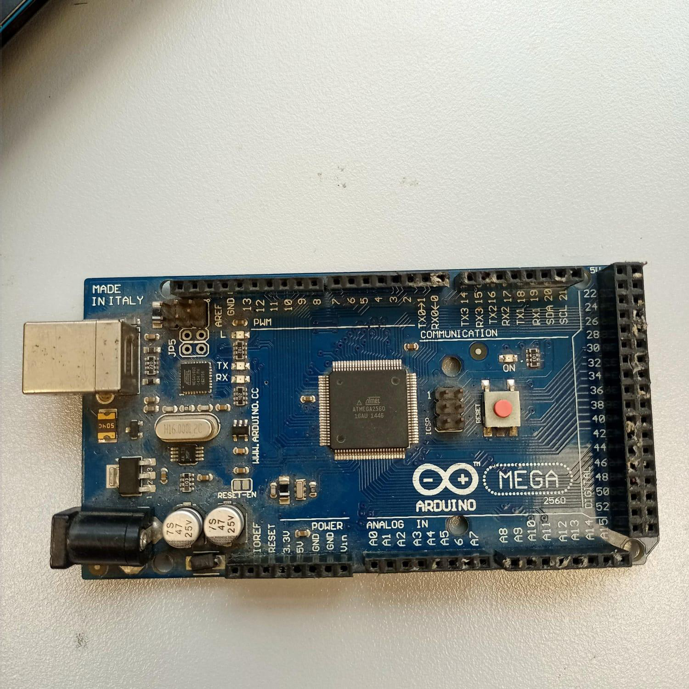
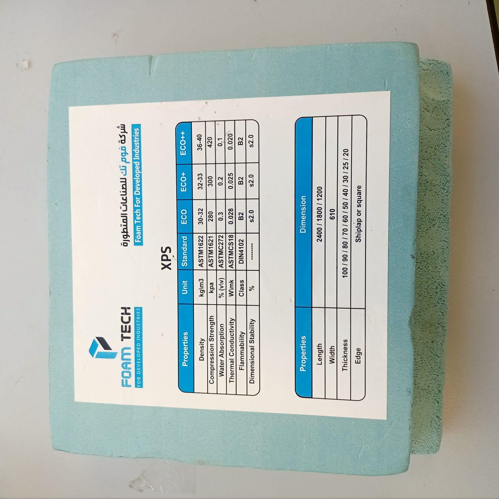

Project overview
This laboratory team project developed a computer-numerical-control foam cutting system to fabricate airfoil profiles from foam. The development progressed from one-motor tests to synchronized four-motor movement, followed by G-code path verification and hot-wire cutting trials.
The report refers to the system as a “CNC foam laser cutter,” but its described cutting mechanism is a heated nickel–chromium (NiCr) wire, not a laser beam.
System architecture
The final motion-control configuration uses an Arduino Mega, four dedicated TB6600 stepper drivers and NEMA stepper motors. GRBL processes G-code commands into coordinated motor movement. A regulated DC supply powers the motion system and cutting wire. The prototype was evaluated through controlled axis movement and thermal cutting experiments.
Development and test methodology
- Compare candidate motor drivers and establish step/direction wiring.
- Verify single-motor operation, then expand to synchronized four-axis control.
- Verify programmed toolpaths by drawing squares and airfoil profiles with a pencil.
- Evaluate NiCr heating-wire configurations and cutting conditions.
- Perform airfoil cuts in foam and assess the observed cutting behavior.
The report documents a later optimization trial using a 0.6 mm NiCr wire, a 12.5 V supply, and a 72 mm/min feed rate; its earlier abstract states a different selected wire diameter. Consequently, those values are presented as reported trial conditions, not a reconciled final specification.
Hardware and laboratory images






Project videos
Three original laboratory recordings provided for this project. They are numbered rather than labeled as specific tests because the footage has not been individually annotated by the project team.
Documentation
Read the full team report for the hardware architecture, electrical wiring, driver comparison, step-by-step testing, and cutting trial observations.
View complete CNC project report (PDF)